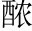
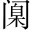

國子先生元和七年，公復為國子博士。晨入太學，招諸生立館下，誨之曰：「業精於勤，荒於嬉；行去聲。成於思，毀於隨隨，因循也。○陡然四句，起下「不明」、「不公」意。。方今聖賢相逢聖君、賢臣。，治具畢張需才分任。，拔去凶邪，登崇俊良。佔去聲。小善者率以錄，名一藝者無不庸庸，用也。。爬杷。羅剔抉淵入聲。○謂搜取人才。，刮垢磨光謂造就人才。。蓋有幸而獲選，孰雲多而不揚「幸」字，最有含蓄。。諸生業患不能精，無患有司之不明；行患不能成，無患有司之不公此四句是一篇議論張本。。」
言未既，有笑於列者曰：「先生欺餘哉！弟子事先生，於茲有年矣頭。。先生口不絕吟於六藝之文，手不停披於百家之編；紀事者必提其要舉綱挈領。，纂言者必鉤其玄極深研幾。；貪多務得，細大不捐悉備。；焚膏油以繼晷軌。，恆兀兀以窮年晷，日景也。兀兀，勞苦也。○恆久。。先生之業，可謂勤矣一段，言勤於己業。。觝底。排異端，攘斥佛老觝，觸也。○辟邪說。；補苴疽。罅去聲。漏，張皇幽眇苴所以藉履。《呂覽》:「衣弊不補，履決不苴。」罅，孔隙也。皇，大也。言儒術缺漏處，則補苴之；聖道隱微處，則張大之。○翼聖學。；尋墜緒之茫茫，獨旁搜而遠紹承「補苴」、「張皇」說。；障百川而東之，回狂瀾於既倒承「觝排」、「攘斥」說。。先生之於儒，可謂勞矣二段，言勞於衛道。。沉浸濃。鬱，含英咀華讀書而涵泳其味。。作為文章，其書滿家作文而悉本於古。。上規姚姒，渾渾無涯姚，虞姓。姒，夏姓也。揚子：「虞夏之書渾渾爾。」，周《誥》殷《盤》，佶吉。屈聱遨。牙周《誥》, 《大誥》、《康誥》、《酒誥》、《召誥》、《洛誥》是也。殷《盤》, 《盤庚》上、中、下三篇是也。佶屈、聱牙，皆艱澀難讀貌。, 《春秋》謹嚴一字褒貶，謹而嚴毅。, 《左氏》浮誇《左傳》釋經，浮虛誇大。,《易》奇而法《易》之變易甚奇，而正當之理可法。, 《詩》正而葩帕平聲。○詩之義理甚正，而藻麗之詞實華。；下逮《莊》、《騷》《莊子》、《離騷》。，太史所錄《史記》、《漢書》。，子云、相如揚雄，字子云。司馬長卿，名相如。，同工異曲猶樂之同工，而異其曲調。○文章不本六經，雖生剝子云之篇，行剽相如之籍，辭非不美，總屬無根之學，故公必「上規姚姒」，而始下逮百家也。。先生之於文，可謂閎其中而肆其外矣三段，言文章之著見。。少始知學，勇於敢為；長通於方，左右具宜。先生之於為人，可謂成矣四段，言為人之成立。○上三段論業精，此一段論行成，共為一腹。。然而公不見信於人，私不見助於友，跋撥。前疐至。後，動輒得咎《詩·豳風》:「狼跋其胡，載疐其尾。」跋，躐也。胡，老狼頷下懸肉也。疐，跲也。狼進而躐其胡，則退而跲其尾，言進退不得自由也。。暫為御史，遂竄南夷貞元十九年，公為監察御史，謫陽山令。。三年博士，宂冗。不見治公元和元年六月為博士，四年六月遷都官史。宂，散也。處閒散之地，而無以自見其治才。。命與仇謀，取敗幾時命與仇敵為謀，數遭敗壞。。冬暖而兒號平聲。寒，年豐而妻啼飢。頭童齒豁，竟死何裨悲。○山無草木曰童。豁，落也。裨，益也。？不知慮此，反教人為尾。○勤業四段，從「能精」、「能成」二語發來，然而一轉，正破「不公」、「不明」也。? 」
先生曰：「籲！子來前！夫大木為杗萌。，細木為桷角。○杗，樑也。桷，椽也。，欂薄。櫨盧。、侏儒欂櫨，短柱。侏儒，短椽。，椳威。、、扂簟。、楔屑。○椳，門樞也。，各得其宜，施以成室者，匠氏之工也，門中橛也。扂，戶牡也。楔，門棖也。。玉札、丹砂，赤箭、青芝匠用木無論小大。○一喻。，牛溲、馬勃，敗鼓之皮玉屑，一名玉札，生藍田山谷。丹砂，硃砂也。赤箭，生陳倉及太山少室。青芝，出太山。四者，皆貴藥。，俱收並蓄，待用無遺者，醫師之良也牛溲，牛溺也。馬勃，馬屁菌也。敗鼓皮，主蟲毒。三者，皆賤藥。。登明選公，雜進巧拙，紆餘為妍醫用藥無論貴賤。○二喻。，卓犖作緩態者。為傑落。，校短量長，惟器是適者，宰相之方也行直道者。。昔者孟軻好辯，孔道以明，轍環天下，卒老於行宰相用人，無論智之巧拙、才之長短。○三結。；荀卿守正，大論是弘，逃讒於楚，廢死蘭陵一引。。是二儒者，吐辭為經，舉足為法，絕類離倫，優入聖域，其遇於世何如也荀卿，趙人。齊襄王時，為稷下祭酒，避讒適楚，春申君以為蘭陵令。春申君死，而荀卿廢。著書數萬言而卒，因葬蘭陵。○二引。？今先生學雖勤而不由其統，言雖多而不要冷語不盡。○三結，下轉正文。其中，文雖奇而不濟於用，行雖修而不顯於眾平聲。。猶且月費俸錢，歲縻廩粟，子不知耕，婦不知織四句解前四段意。○再轉。，乘馬從有以養家。徒，安坐而食去聲。，踵常途之役役，窺陳編以盜竊有以自養。，然而聖主不加誅役役，隨俗而無異能。盜竊舊章，而無創解。○再轉。，宰臣不見斥，非其幸歟誅，責也。！動而得謗，名亦隨之。投閒置散，乃分之宜幸其遇世，愈於二儒。○再轉。。若夫商財賄之有亡，計班資之崇庳此段解前「公不見信」一段意。言有司未有不公不明處。，忘己量之所稱卑。，指前人之瑕疵去聲。，是所謂詰匠氏之不以杙財賄，謂祿也。班資，品秩也。庳，下也。前人，暗指執政。瑕疵，謂不公不明也。為楹亦。，而訾杙，橛也。楹，柱也。杙小楹大。醫師以昌陽引年，欲進其豨苓也紫。。」
公自貞元十八年至元和七年，屢為國子博士，官久不遷，乃作《進學解》以自喻。主意全在宰相，蓋大才小用，不能無憾。而以怨懟無聊之詞託之人，自咎自責之詞託之己，最得體。